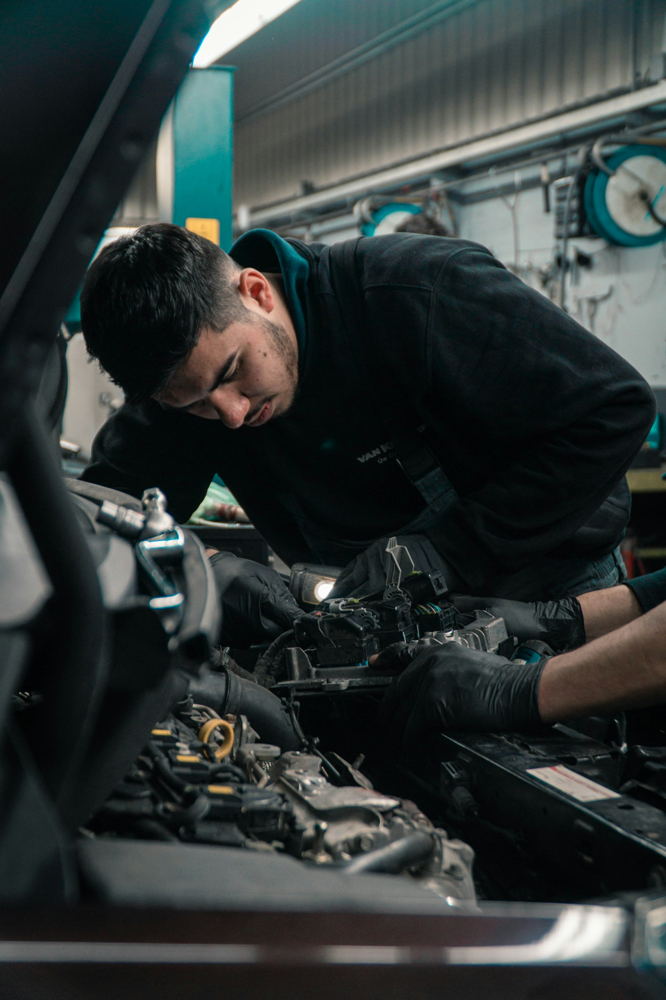
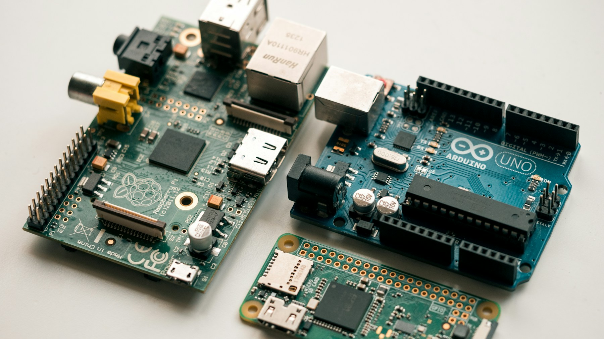

Une chaîne de production.
Quatre zones à rendre visibles.
Stocker
Niveau d’une cuve
RéapprovisionnerProduire
Température d’un moteur
Examiner une dériveContrôler
Image d’un produit
Signaler un défautExpédier
Position d’un colis
Enquêter sur un retardQui transforme la mesure
en décision exploitable ?

Le terrain vérifie toujours la réalité.Ingénieur embarqué
Développer le logiciel de l’objet
Automaticien
Intégrer l’objet à la ligne
Intégrateur SI
Relier messages et applications
RSSI / cybersécurité
Cadrer les accès et les risques
Responsable métier
Porte le besoin, la valeur attendue et la décision à changer.
Un objet connecté combine
cinq fonctions.

Mesurer
Capteur + conversion
Traiter
Microcontrôleur + logiciel
Communiquer
Interface + messages
Alimenter
Autonomie et puissance
Agir
Actionneur : modifier le monde physique et confirmer l’état.
Qui fournit quoi ?
STMicroelectronics
Capteurs et microcontrôleurs
Orange
Exemple de réseau opérateur

AWS IoT Core
Réception et routage des messages

Schneider Electric
Solutions et exploitation industrielles

Birdz / Veolia
Télérelève et exploitation de l’eau
Carte illustrative au 8 novembre 2026. Les rôles se recouvrent ; chaque logo identifie un exemple, pas une exclusivité.
Le défi : exploiter les objets
dans la durée.
Interopérabilité
Faire coopérer des équipements différents.
Verrou : compatibilité réelleVie du parc
Identifier, sécuriser, mettre à jour et retirer.
Verrou : gouvernance du cycle de vieLocal + distant
Choisir où traiter et comment rester utile hors ligne.
Verrou : service, énergie, latenceCe sont des axes documentés, sans calendrier universel. Une norme ne garantit pas une offre disponible partout.